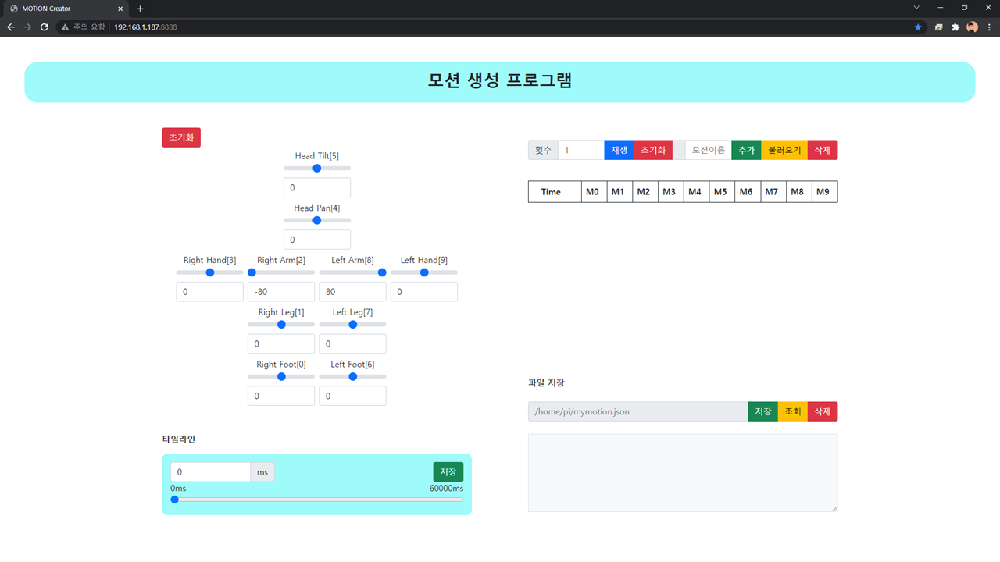
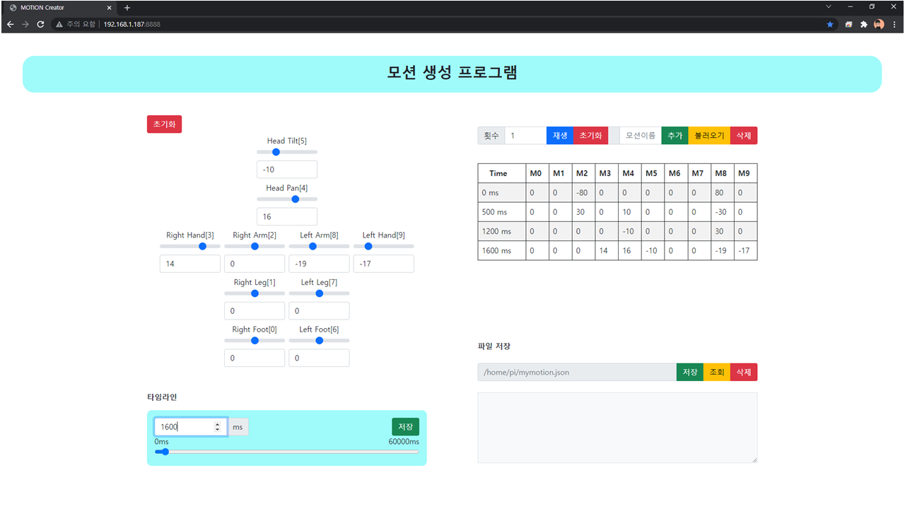
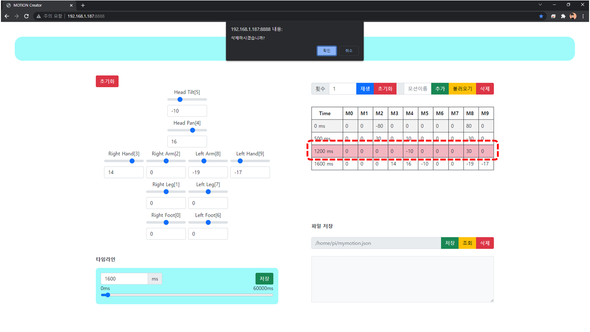
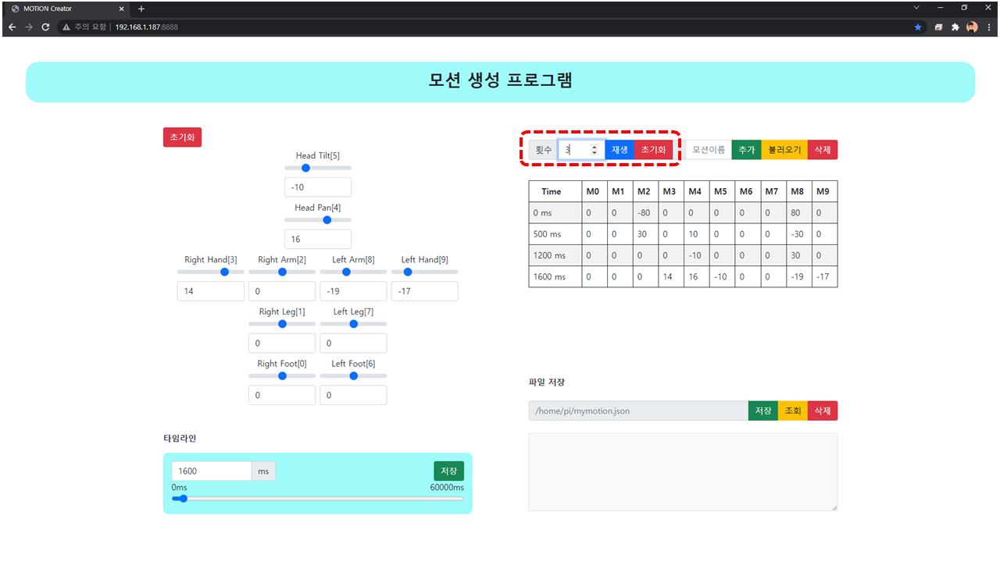
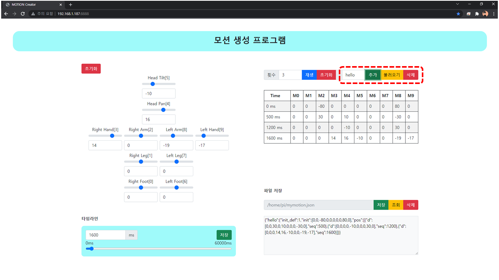
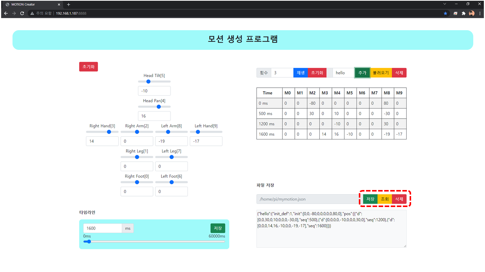

Motion Creator
파이보의 동작을 생성하는 툴 입니다.
인터넷 브라우저가 필요합니다. (Chrome 브라우저 사용 권장)
사용 방법
$ cd ~/openpibo-tools/motion-creator
$ sudo python3 main.py --port 8888
프로그램을 시작합니다.
--port: 연결할 포트를 입력합니다. 만약 설정하지 않으면, 기본 포트는8888입니다.
이후 인터넷 브라우저에서
http://<PIBO IP>:<PORT>에 접속합니다.예: http://192.168.2.144:8888
(출력된 주소를
ctrl + click해도 됩니다)모션을 생성하는 페이지입니다.

좌측에는 모터 제어부와 타임라인이 있고, 우측에는 모션 테이블과 모션 파일이 있습니다.
모터 제어부의 입력값을 조작하면 파이보의 모터가 실시간으로 움직입니다.
모터 제어부의 초기화 버튼을 누르면 로봇을 초기 자세로 돌아갑니다.
모터 제어부의 모터 값을 조정한 후, 타임라인에서 시간을 설정하고 저장 버튼을 누르면 모터 값들이 우측 테이블에 추가됩니다.
(시간은 50ms 간격으로 설정할 수 있습니다.)

모션 테이블의 각 행을 클릭하면, 해당하는 행을 삭제할 수 있습니다.

동작을 테스트하려면, 모션 테이블 상단의
재생버튼을 누릅니다.
횟수를 설정해 여러번 반복할 수도 있습니다. (횟수가 3이면, 동작이 3번 반복됩니다.)모션 테이블을 완료하면, 모션 이름을 입력하여 모션을
추가할 수 있습니다.
모션 이름을 입력하여 해당 모션을
삭제할 수도 있고, 불러올 수도 있습니다.모션을 추가하면 모션 파일 하단에 추가한 모션의 내용이 추가됩니다.
생성한 모션에 대한 저장은
/home/pi/mymotion.json으로 고정되어 있습니다.
파일 저장의
저장버튼을 누르면 현재 추가되어 있는 모션들을/home/pi/mymotion.json에 저장합니다.저장버튼을 누르기 전에는 파일로 저장은 되지 않습니다새로고침 등으로 파일 내용을 볼 수 없을 때,
조회를 누르면 파일 내용을 확인할 수 있습니다.삭제버튼을 통해 모션 파일을 삭제하고, 초기화합니다.
생성한 모션을 사용합니다.
>>> from openpibo.motion import Motion >>> pibo_motion = Motion() >>> ret = pibo_motion.get_motion("hello", path="/home/pi/mymotion.json") >>> print(ret) >>> pibo_motion.set_motion('hello', path="/home/pi/mymotion.json") # 동작 실행
또는 생성한 파일에서 코드를 복사해서 사용할 수 있습니다.